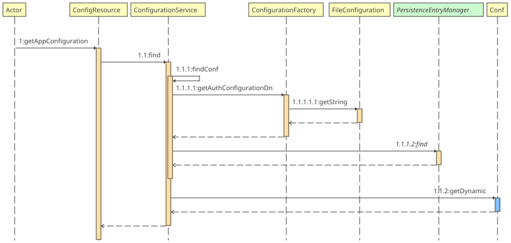

Janssen code notes#
code involved in loading configuration#
io.jans.as.common.service.common.ConfigurationService:- allows to add and update configuration in the database using
PersistenceEntryManager. Also provides other methods. - jans-orm :
FileConfigurationis used to read configuration from property files
Misc notes:#
- jans-auth-server
AppInitializerclass loads all the services required by jans-server, like persistence manager. AppInitializeruses methods inApplicationFactoryto read properties stored in files and create objects likePersistenceEntryManagerFactoryusingPersistanceFactoryServicewhich is injected inApplicationFactory- To see which entity classes are mapped to which tables, search for
@ObjectClassin jans-auth-server project. You'll find@ObjectClass(tablename). - there are many
modelpackages in AS but only few (~23) are persistence related. Others (likeCodeVerifierunderio.jans.as.model.authorizepackage) are not related to persistance rather they are like POJOs. objectClassis the name of the table. This is visible fromSqlConnectionProvider.getTableMappingByKey().
properties and featureflags#
- Classes that hold the properties of some of the modules are below:
- io.jans.as.model.configuration.AppConfiguration
- io.jans.as.model.common.FeatureFlagType
- io.jans.fido2.model.conf.Fido2Configuration
- io.jans.scim.model.conf.AppConfiguration
jans-config-api#
code flow for /jans-config-api/api/v1/jans-auth-server/config endpoint#
- One thing to notice here is that config-api doesn't depend on jans-auth-server to fetch the configuration. Rather it directly reaches to persistence to get the properties
- but it uses the model from jans-auth-server (i.e
conf) to hold these properties fetched from the db.

Code involved in client authentication#
AuthenticationFilteris the main class. It is a@WebFilterand filters every request coming at below mentioned endpoints"/restv1/authorize", "/restv1/token", "/restv1/userinfo", "/restv1/revoke", "/restv1/revoke_session", "/restv1/bc-authorize", "/restv1/par", "/restv1/device_authorization", "/restv1/register", "/restv1/ssa"
This class is a servlet filter as it implements jakarta.servlet.Filter interface and overrides doFilter method
## Sector identifier
- where is sector identifier uri gets validated? code
-
where does pairwise ids get generated? code
-
it seems that some endpoints authenticate clients, but there are certain endpoints that authenticate user. See if condition at line. For these endpoints it'll invoke client auth, and for rest of the endpoints it'll invoke user auth.
- actual method that compares clientId and secret with what is stored in backend is the
authenticatemethod inClientServiceclass. here
code for redirect URI#
- io.jans.as.server.service.RedirectionUriService.validateRedirectionUri() : is where incoming URI from various requests get compared with what is registered by client#
how web pages are built#
Web pages like https://jans-opensuse/device-code are xhtml pages. For example:
jans-auth-server/server/src/main/webapp/device_authorization.xhtml
/opt/jetty-11.0/temp/jetty-localhost-8081-jans-auth_war-_jans-auth-any-2256945074165495919/webapp/device_authorization.xhtml
jans-auth-server/server/src/main/resources/jans-auth.properties
device_authorization.xhtml uses the login-template.xhtml as a template. In the code base, the templates can be found
jans-auth-server/server/src/main/webapp/WEB-INF/incl/layout/login-template.xhtml
/opt/jetty-11.0/temp/jetty-localhost-8081-jans-auth_war-_jans-auth-any-2256945074165495919/webapp/WEB-INF/incl/layout/login-template.xhtml
/opt/jetty-11.0/temp/jetty-localhost-8081-jans-auth_war-_jans-auth-any-2256945074165495919/webapp/casa/login-template.xhtml
Command to find out which template is used in which xhtml. Run the command at the root of your source code:
dhaval@thinkpad:~/IdeaProjects/Janssen/jans$ grep -r -i --include *.xhtml "template=" .
Command to find out which xhtml pages are not using templates. It seems that these pages are used just for redirect and to call actions. Won't be visible to the end user. Like logout.xhtml
egrep -r -Li --include *.xhtml "template=" .
How is logo on an xhtml page is fetched:
Logo is served by a servlet jans-auth-server/server/src/main/java/io/jans/as/server/servlet/LogoServlet.java. This servlet is called from template files like login-template.xhtml, login-extended-template.xhtml. Various files, like device_authorization.xhtml use these template files and hence get the logo.